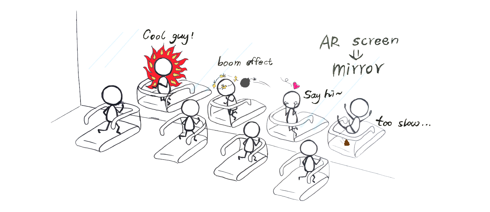
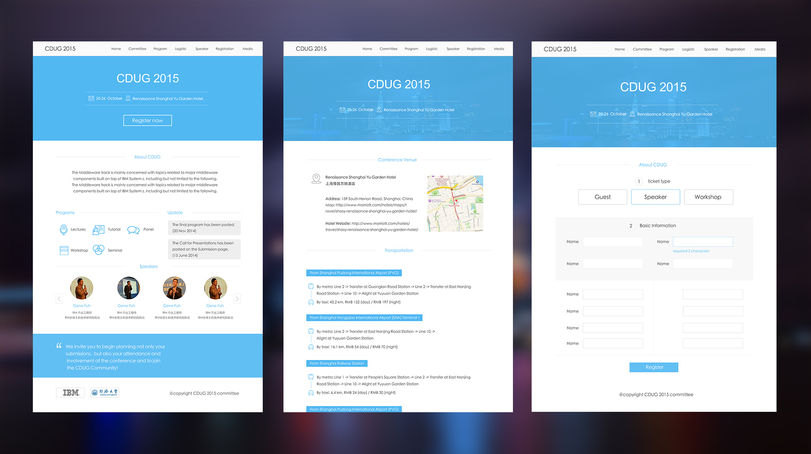
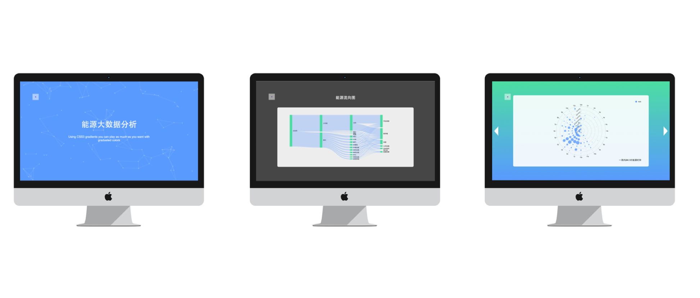

People have a natural favor for water. But our interaction with water are so limited and usually requires a time and efforts commitment. Our idea is to take advantage of the waterscape everywhere and make them interactive. Our final products is the water harp. Touching the water column will play one note. And we used Raspberry Pi‘s multi-thread feature to enable several notes being played together and thus it sounds like a natural instrument.
I'm the team leader and interaction designer of the project. We took home the First Place Award (Top 20 out of 368 projects) and the Most Popular Project Award(Top 10 out of 168 exhibited projects).
We admire those who persevere in working out and blame ourselves for not being so persistent. However, it is probably the experience of working out in the gym that to blame! Working with designers from Dentsu, we came up with this Boom Boom Gym in which the normal mirror is replaced by a Augmented reality screen. It will track people's fitness condition, and reflect it with effects on the screen. We also designed game strategies based on the screen.
CDUG is an annual conference inside IBM z community ( Basically IBM's Clients in China that are using IBM z machine). Before 2015, The conference website is outdated and hard to use. My job is to redesign the website and implement the front-end of it.
Designed and developed a website for visualizing campus energy consumption using Echarts.js and D3.js.
